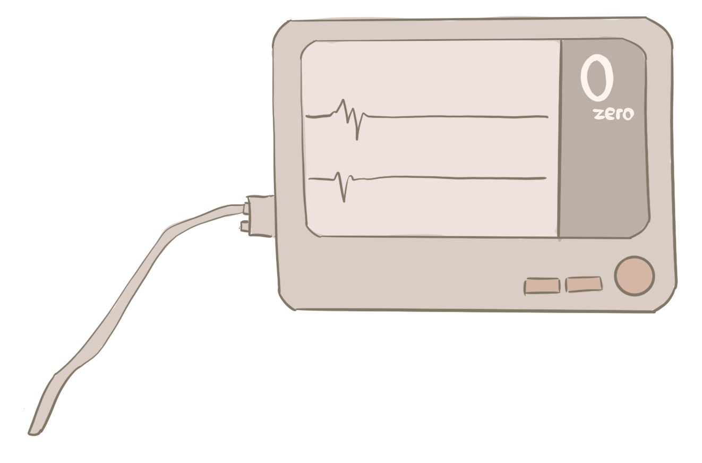
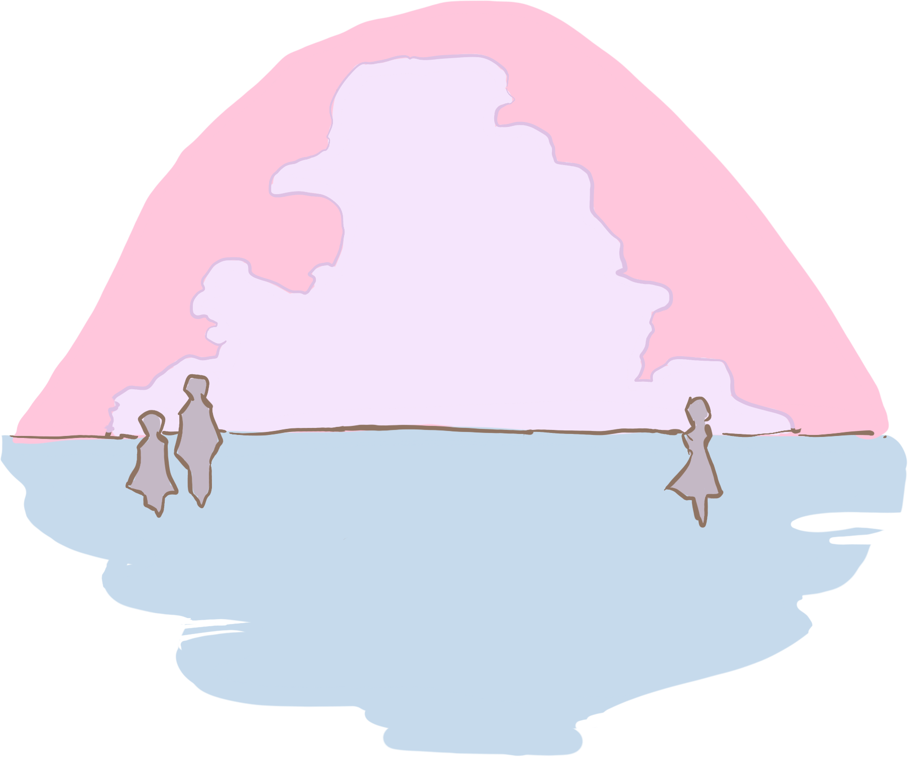

WHAT IS DEATH
It is said that there are three deaths.
The first death is when your heart stops beating and you are biologically declared dead.

The second death is your social death.
People attend your funeral dressed in black...
...and the world erases your proof of existence.

The third death is when the last person in the world who remembers you, forgets you,
which
is called the...
ULTIMATE DEATH
